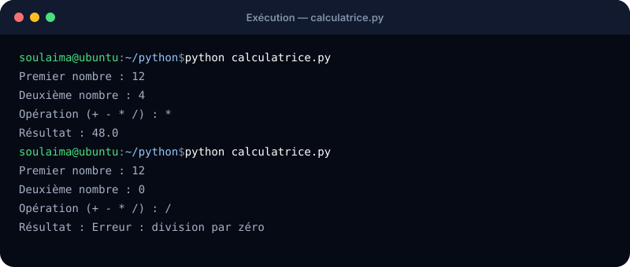

1. Calculatrice
Problème : Demander deux nombres et une opération, puis afficher le résultat en gérant la division par zéro.
def calculer(a, b, op):
if op == "+":
return a + b
elif op == "-":
return a - b
elif op == "*":
return a * b
elif op == "/":
if b == 0:
return "Erreur : division par zéro"
return a / b
return "Opération inconnue"
a = float(input("Premier nombre : "))
b = float(input("Deuxième nombre : "))
op = input("Opération (+ - * /) : ")
print("Résultat :", calculer(a, b, op))Fonctionnement : La fonction calculer teste l'opérateur avec if/elif et renvoie le résultat. Les saisies sont converties en float pour accepter les décimaux.
Capture de l'exécution :

Difficultés et solutions : Au début j'avais oublié de convertir input() : "12" + "3" donnait "123". Solution : float(input(...)).